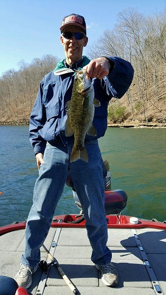

Last year I had the opportunity to go visit a long-time friend of mine who was transferred to Tennessee for his job, and we ended up doing three things that I enjoy very much - going smallmouth bass fishing, enjoying a good hockey game and checking out a part of US history.
Growing up as a kid in the Chicagoland area, my mom and dad would always take us on a family vacation up to northern Wisconsin for 2 weeks. From as early as I can remember, I enjoyed just being out on the pier or out in a boat fishing. There is always something about being out on the lake being surrounded by all the water, trees and blue skies. But even better is when you lure one of those finned friends into taking the bait - and you get to experinece the battle of man vs fish!
When I was about 10 years old I read a book about a guy who was supposed to be the expert on fishing for smallmouth bass. He was born and raised around Dale Hollow lake in Tenessee, and I always dreamed about going fishing there. Finally, as I was pushing 60 years old, I would get that chance - and it was a blast hanging out with my good buddy and getting to fish in a lake that I dreamed about as a kid.
This is what I am talking about! 
My favorite sport, both as a kid and as an adult, has always been hockey. From the time I was 6 years old and got my first pair of ice skates, until I was almost 40 years old, I actually played hockey. I always liked the speed and excitement of the games, and also enjoyed watching the Chicago Blackhawks games on TV with my dad growing up as a kid. So what a pleasant surprise to find out that my friend had gotten two tickets to see the Chicago Blackhawks play the Nashville Predators - in Nashville! Nashville is a beautiful city and it was fun checking out the city before the game, and then getting some good "barbecue" before watching hockey.
Being from Chicago and a diehard Blackhawks fan, I wore my Blackhawks jersey into the Nashville arena. Needless to say I was thankful that the Nashville fans were not too mean to an out-of-towner. Before the game we were able to get down to the front row and watch as the teams warmed up before the game.
I would have loved to have been out there playing - but realize that all of those players are probably less than half my age. I would never be able to keep up with them! And the icing on the cake was that the Blackhawks won the game.
As good as it is to be a citizen of the United States of America, its history has always been of interest to me. We sometimes forget that the freedoms we have today, were by no means free - as we see the stories of the men and women who gave there lives, to secure the freedom of future generations. I had the opportunity to learn a little bit about some of the history of the American Civil War, and specifically the "Battle of Franklin" which took place in 1864, near Nashville, Tennessee. Even though it ranked as number 17 for the most casualties of the Civil War battles (9,000+), it is an example of the exterme loss of life which was sacrificed, for those who followed.
If you have an interest in history, here are a couple of links for more information: